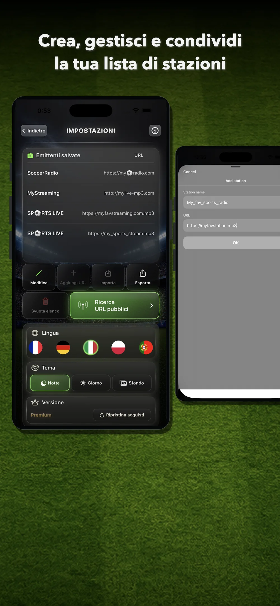
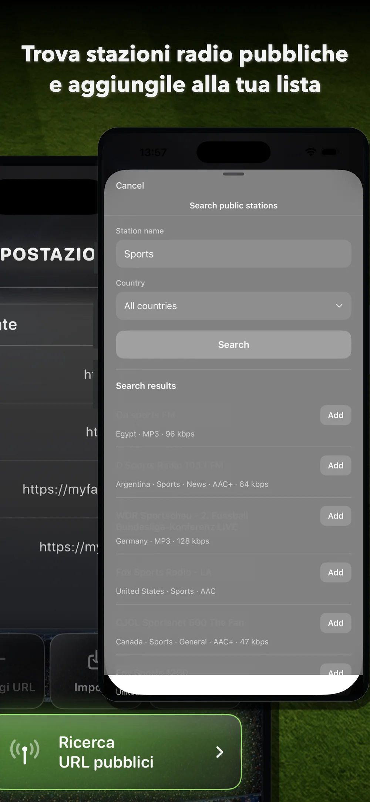
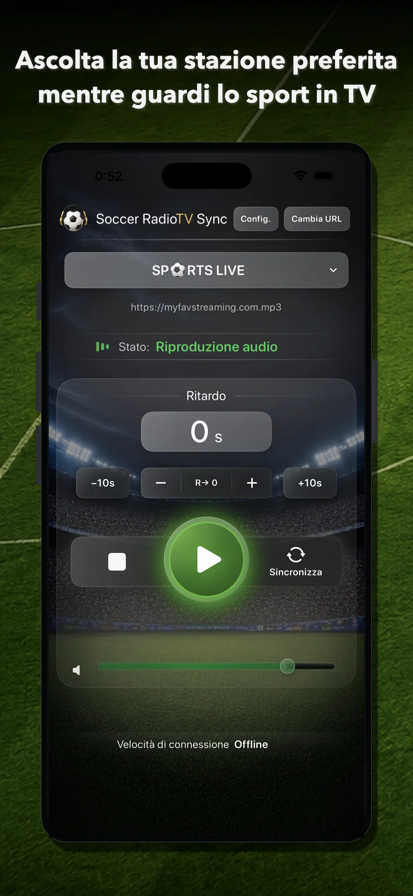
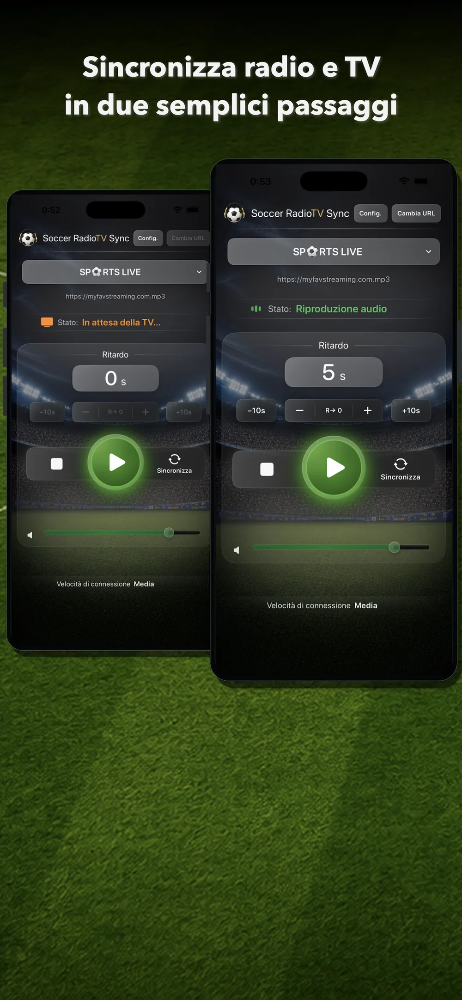
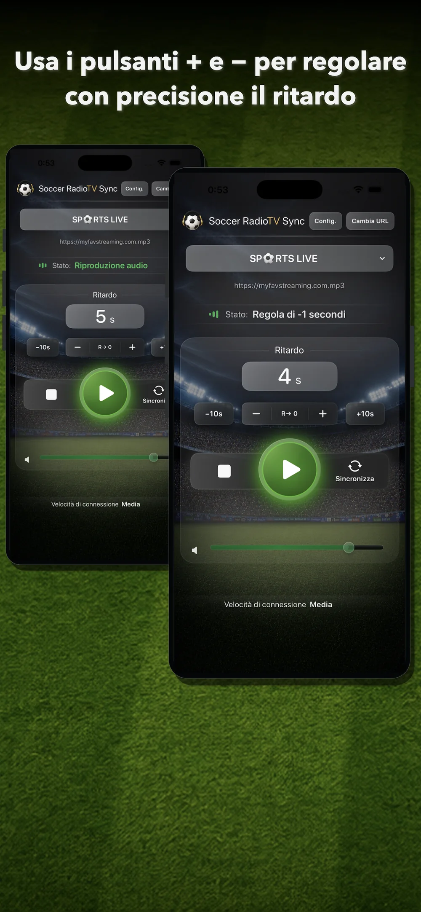
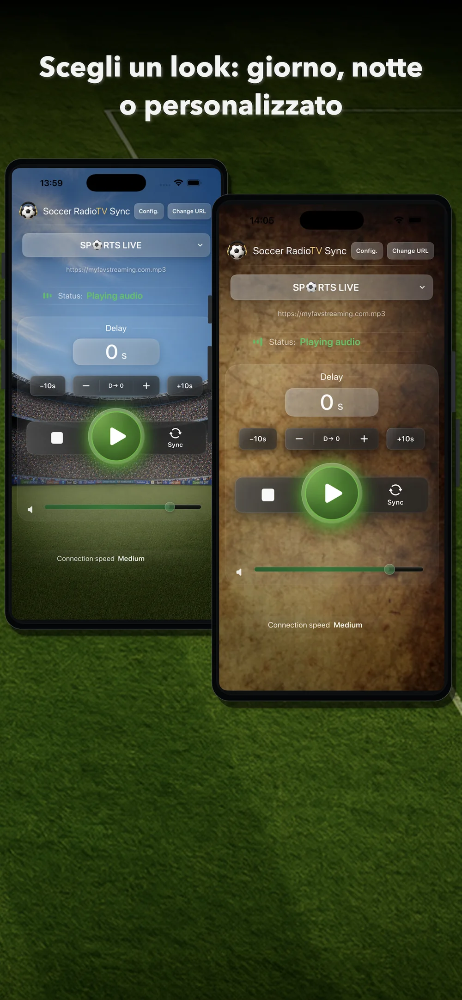

1. Scegli o aggiungi un’emittente
Per iniziare, serve uno stream radio online compatibile.
- Cerca stazioni pubbliche con lo strumento integrato.
- Aggiungi un URL manualmente.
- Importa una lista di emittenti.
Da Impostazioni puoi gestire le emittenti salvate, modificare la lista, aggiungere nuovi URL, importare, esportare o cancellare l’intera lista.

2. Usa la ricerca di stazioni pubbliche
La versione 2.0 include una ricerca di stazioni pubbliche basata su Radio Browser.
- Apri Impostazioni.
- Tocca Ricerca URL pubbliche.
- Digita il nome dell’emittente, una parola chiave o il tipo di contenuto che cerchi.
- Scegli un Paese per limitare i risultati, se necessario.
- Tocca Cerca.
- Controlla i risultati.
- Tocca Aggiungi per salvare nella lista un’emittente compatibile.
In seguito potrai selezionarla dalla schermata principale.

3. Aggiungi un URL manualmente
Se possiedi l’URL diretto di uno stream compatibile, puoi aggiungerlo manualmente.
- Apri Impostazioni.
- Tocca Aggiungi URL.
- Inserisci il nome dell’emittente.
- Incolla l’URL.
- Tocca OK.
L’emittente verrà salvata nella tua lista. Puoi così aggiungere stream compatibili di radio tradizionali o digitali, commentatori, creator o servizi che offrono audio radio online.
4. Seleziona l’emittente nella schermata principale
Nella schermata principale, apri il selettore delle emittenti e scegli quella che vuoi ascoltare.
Se un’emittente dispone di più URL o server, puoi cambiare URL con il pulsante Cambia URL.
I server della stessa emittente possono avere latenze differenti. Se il suono della radio arriva dopo l’immagine TV, prova un altro URL.

5. Tocca Play
Tocca Play per avviare la riproduzione.
Nella versione 2.0, la riproduzione inizia prima dopo aver toccato Play, rendendo l’app più rapida e diretta.
Quando l’app è in riproduzione, vedrai lo stato Riproduzione audio.
6. Sincronizza in due passaggi
Il pulsante Sincronizza può calcolare automaticamente il ritardo necessario.
Passaggio 1
Quando senti alla radio un momento riconoscibile, tocca Sincronizza. Per esempio: un tiro, un fallo, un calcio d’angolo, un’azione chiara o un commento facile da identificare.
L’app passerà allo stato In attesa della TV.
Passaggio 2
Quando vedi lo stesso momento in televisione, tocca di nuovo Sincronizza.
L’app calcola il tempo trascorso e applica alla radio il ritardo corrispondente. Da quel momento, la cronaca dovrebbe coincidere con l’immagine.

7. Regola manualmente il ritardo
Dopo la sincronizzazione, puoi rifinire il risultato con i controlli manuali.
- Usa + per aumentare leggermente il ritardo.
- Usa – per ridurre leggermente il ritardo.
- Usa +10s per aumentare rapidamente il ritardo.
- Usa –10s per ridurre rapidamente il ritardo.
- Usa R→ 0 per azzerare il ritardo.
Questi controlli sono utili se la radio è leggermente in anticipo o in ritardo durante la partita.

8. Quando usare +10s e –10s
I pulsanti +10s e –10s servono per modifiche più grandi.
Possono essere utili quando:
- hai cambiato canale;
- hai cambiato server;
- hai cambiato emittente;
- l’immagine TV si è bloccata per alcuni secondi e la sincronizzazione è andata persa.
Se il disallineamento è piccolo, di solito sono preferibili + e –.
9. Crea e gestisci le liste
Da Impostazioni puoi:
- salvare emittenti;
- aggiungere URL;
- modificare le voci;
- importare liste;
- esportare liste;
- condividere liste;
- cancellare l’intera lista;
- cambiare lingua;
- cambiare il tema visivo;
- ripristinare gli acquisti.
In questo modo puoi creare la tua lista di emittenti e conservare più alternative per ogni trasmissione.
10. Scegli un tema visivo
Soccer RadioTv Sync 2.0 permette di scegliere l’aspetto dell’app.
Modalità Giorno
Una schermata più luminosa con atmosfera da stadio.
Modalità Notte
Una schermata più scura pensata per ridurre l’intensità visiva.
Sfondo personalizzato
Usa una tua immagine come sfondo della schermata principale.
Puoi cambiare il tema da Impostazioni.

12. Ripristina gli acquisti
Se hai già acquistato Premium o eri un utente pagante di una versione precedente, puoi usare Ripristina acquisti da Impostazioni.
Questa funzione recupera l’accesso Premium se reinstalli l’app o cambi dispositivo usando lo stesso Apple ID.
13. Consigli per una buona sincronizzazione
- Scegli uno stream radio che arrivi prima dell’immagine TV.
- Usa Sincronizza con un momento chiaramente riconoscibile.
- Se il risultato è quasi corretto, regolalo con + o –.
- Se il disallineamento è grande, usa +10s o –10s.
- Se un URL non funziona bene, prova un altro server della stessa emittente.
- Se l’immagine TV si blocca per alcuni secondi, non fermare la riproduzione. Ripeti la sincronizzazione al volo come all’inizio della partita.
- Conserva più URL utili per le tue emittenti preferite.
14. Limitazioni importanti
Soccer RadioTv Sync è progettata principalmente per la TV in streaming quando l’immagine arriva dopo la radio online.
Con il digitale terrestre o il satellite, i tempi possono essere diversi perché l’immagine può arrivare prima della radio online. Soccer RadioTv Sync è pensata soprattutto per i casi in cui la radio deve essere ritardata per coincidere con un’immagine TV che arriva più tardi.
L’app non controlla le trasmissioni esterne né i server delle emittenti. Disponibilità, qualità e latenza possono variare per ogni stream.
Se un’emittente cambia URL, interrompe le trasmissioni o non offre un formato compatibile, potresti dover trovare un altro URL o usare un’altra emittente.
15. Riepilogo rapido
- Aggiungi o cerca un’emittente.
- Seleziona l’emittente nella schermata principale.
- Tocca Play.
- Tocca Sincronizza quando senti un momento alla radio.
- Tocca di nuovo Sincronizza quando lo vedi in TV.
- Regola con +, –, +10s o –10s.
- Goditi lo sport con la radiocronaca sincronizzata.